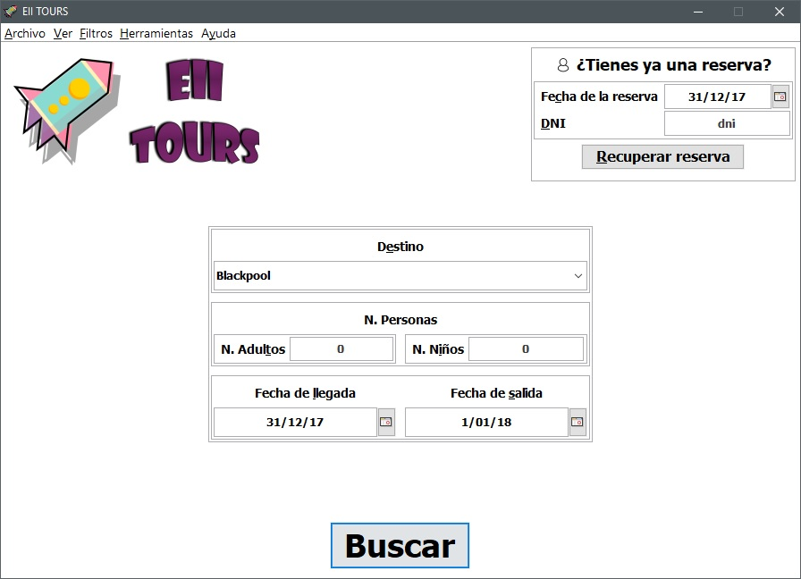

EII VIAJES
La aplicacion EII Viajes es una flamante aplicacion de reservas creada para permitir a una persona añadir
los productos que le interesan, entre paquetes, entradas y alojamientos.

La pantalla inicial tiene una serie de caracteristicas:
- Panel de recuperar reserva:
- Cuadro de texto a introducir la fecha de la reserva realizada.
- Cuadro de texto a introducir el DNI de la reflejada al realizar la reserva.
- Panel de lugar, fecha y personas:
- Lista de lugares: Conjuntos de todos los lugares que se encuentran en la base de datos. Si se introduce un valor que no está no permite continuar.
- Fecha de entrada: Fecha de entrada a el parque/alojamiento. Si se introduce un valor que no está no permite continuar.
- Fecha de salida: Fecha de salida a el parque/alojamiento. Si se introduce un valor que no está no permite continuar.
- Adultos: Numero de adultos que conformaran la reserva. Debe entrar comprendido entre 1 y 999. Si se introduce un valor que no está no permite continuar.
- Niños: Numero de niños que conformaran la reserva. Debe entrar comprendido entre 0 y 999. Si se introduce un valor que no está no permite continuar.
- Boton Buscar: permite, una vez introducidos datos correctos, realizar una busqueda con los datos introducidos.